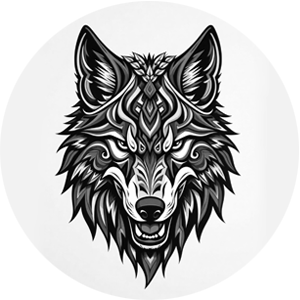

Tribe Engager
Bio
Tribe Engager is a music project built around a simple idea: techno connects people through rhythm. It belongs in a room filled with bass, movement and energy. Techno is music that should be felt as much as it is heard, connecting hearts and souls along the way.
My journey started back in 2003, when DJing became a passion and a way to explore the deeper side of electronic music. Over the following years, I played a number of local parties and immersed myself in the world of techno. In 2007, I stepped away from DJing completely. Life simply took a different direction, and other priorities came first.
For almost two decades, the decks stayed untouched. Then, in September 2025, I started playing again. Not as a comeback story, but simply because I felt the urge to get back behind the decks. After playing a few private parties with friends and receiving some very positive feedback on my skills and style, I decided to take it a little more seriously again. Some things just never really disappear. And if I was going to spend more time behind the decks, why not share my love for techno too? That's when Tribe Engager was born.
Tribe Engager stands for groovy, raw and driving techno, music with movement, character and a hypnotic pull. Rolling grooves, hard percussion and deep, relentless rhythms are the foundation. For me, techno is about subtle progression and slowly building tension. When the right tracks come together, the room changes. People stop being individuals for a moment and become part of the same movement. The dancefloor becomes a place where transformation seems possible. This is what I call the liminality of the dancefloor.
My influences come from both the new and the old. Artists such as Uväll, NØRBAK, Regent, DJUS, innexen, Benales, Yanamaste, Chlär, Kerrie, Marcal, Tarkno, Remco Beekwilder, VNTM, Lewis Fautzi, Phil Berg, dc11, Alarico and Sicion, to name just a few, represent part of the contemporary sound that keeps pushing techno forward. At the same time, the foundations run deep. Influences range from artists like Jeff Mills, Robert Hood, The Advent, Surgeon, Regis, Ben Sims, Luke Slater, Levon Vincent, Ben Klock and Umek, together with the rich Belgian techno heritage that has always been close to home. Different generations, scenes and approaches, but the same obsession with rhythm, movement and the hypnotic power of techno.
I also love the technical side of DJing. For me, mixing is not just about putting one track after another. In a time when digital has become the standard, I believe strong technical skills make me more agile as a DJ. They enable me to make decisions in the moment, adapt to the energy of the dancefloor and take the set somewhere I did not necessarily plan beforehand. Decent skills give me the freedom to focus on what really matters: turning crowds into a techno tribe.
Although my sets are currently focused on mixing rather than live performance, I enjoy working with different setups, from digital players and DVS to vinyl. Vinyl has always had a special place for me, with a growing collection of records that continues to inspire. I also enjoy experimenting with hardware and discovering what happens when you step away from the predictable.
I am not looking to chase big stages. I would rather be part of genuine gatherings where techno creates connections. Intimate rooms or spaces, shared energy and people losing themselves in the music. Moments where the music brings people together, where the outside world fades away and emotion takes over. And beyond the dancefloor, Tribe Engager is a way to share that same energy through music, discoveries and a genuine love for techno.
Driven by rhythm. Guided by unity.